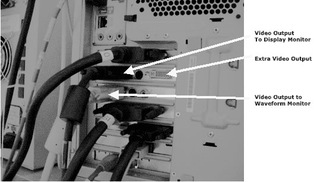
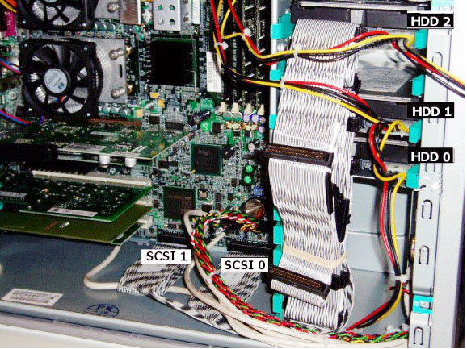
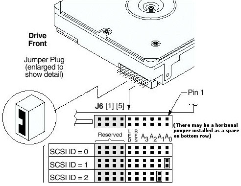
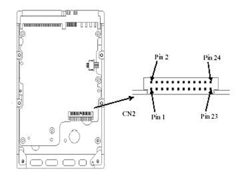
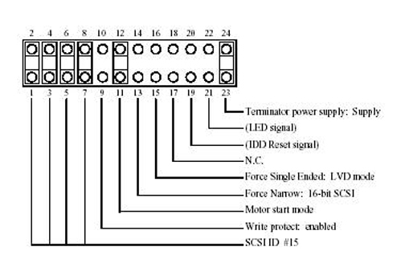

Operating Documentation
Direction 5133315-3, Rev# 14
Signa EXCITE HD 1.5T Service Methods
Module Version 2.0, Version Date 11/3/09
Operating Documentation |
The Power LED is located on the Power On/Off button.
Solid Green: System is on
Solid Yellow: Workstation is in Standby or Hibernate mode
Flashing yellow or solid red: System error.
The Power-On-Self-Test (POST) can detect any errors or changes to the configuration. In either case, a code and a short description is displayed. Depending on the message, one or more choices are displayed as follows:
Press <F1> to ignore the message and continue
Press <F2 >to run the Setup program and correct the System Configuration Error
Press <Enter>to see details about the message. After viewing the message, you can return to the POST display screen.
Common POST errors and recommended solutions
ERROR 0010: The PC Configuration has been lost, cleared, corrupted or has not initialized. When the PC remains unplugged for a long time, the battery that supplies current to the CMOS memory can get discharged.
Check that the battery is inserted properly
If necessary, replace the battery as described in your user's guide.
Run the Setup program to re-configure your PC
ERROR 0011: When PC remains unplugged for a long time, the battery that supplies current to keep the PC date and time can get discharged
Check that the battery is inserted properly
If necessary, replace the battery as described in your user's guide
Set time and date from the Setup program or from your operating system
ERROR 0012: The PC configuration has been cleared or has not been initialized
Run the Setup program to re-configure your PC
ERROR 0031: The microcode update for your processor was not found in the system BIOS. The microcode update corrects any errors in the processor. When it is not loaded, the processor may function incorrectly, causing data loss or corruption. Your BIOS version may be too old and does not contain the microcode update suitable for your processor.
Download and install the latest BIOS from www.hp.com/go/biosupport
ERROR 0100: Some key on the keyboard has been pressed during the PC power-on self-test
Ensure that the none of the keyboard keys get pressed accidentally during boot process
If this error persists, contact your Service Representative for a keyboard replacement
ERROR 0101: The keyboard has reported an error during the self-test
Restart your PC
If the error persists, contact your Service Representative for a keyboard replacement
ERROR 0102: The system board self test has detected a general failure on the integrated keyboard controller
Contact your Service Representative for a system board replacement
ERROR 0103: The keyboard is not connected
Check that the keyboard connector is firmly connected
If the problem persists, contact your Service Representative for a keyboard replacement
ERROR 0105: The mouse has reported an error during it's self test.
Clean the mouse and the ball as described in the “ Keyboard or Mouse does not work” section on page 88 of your user guide.
If the problem persists, contact your Service Representative for a keyboard replacement.
ERROR 0106: The mouse is not responding
Ensure that the mouse connector is firmly connected.
If the problem persists, contact your Service Representative for a keyboard replacement.
ERROR 0108: The System configuration has detected that the mouse and keyboard connections are inserted. Refer to Table 1 for a detailed LINUX PC bootup error listing
Turn off the system
Swap the mouse and keyboard connections
Table 1: LINUX PC Bootup Errors
| Beeps | Component | Error | Resolution |
| 0 | NA | No problem or power button stuck | Dislodge power button if possible or replace HP computer. |
| 1 | Processor | Processor absent, or improperly connected | Check internal connections, replace PC |
| 2 | Power Supply | Power supply is in protected mode or system is hung | Try power reset, or replace HP computer |
| 3 | Memory | Bad memory module | Replace HP computer |
| 4 | Video card | Graphics card problem | Replace HP computer |
| 5 | PCI card | PCI card Initialization problem | Replace HP computer |
| 6 | Corrupted BIOS | Replace HP computer | |
| 7 | System board | Defective System board | Replace HP computer |
There are two video outputs from the HP - * 8000 computer on two separate video cards. For troubleshooting video issues, the outputs can be swapped.
Illustration 1: Video Output Troubleshooting

| NOTE: | It is important to always configure the SCSI 0 Adapter Channel to HDD 0 and SCSI 1 Channel to HDD 1 and 2. There have been instances where the Drives were mounted in a different order. If replacing a Disk, physically follow the SCSI ribbon cable to confirm Disk to SCSI Channel configuration. |
Illustration 2: Disk Drive Information

Illustration 3: Disk Drive Configuration

Illustration 4: Jumper Locations

| SCSI Device | Jumper Setting |
|---|---|
| SCSI = 0 | No jumpers between pins 1 through 8 |
| SCSI = 1 | Jumper between pins 1 and 2 |
| SCSI = 2 | Jumper between pins 3 and 4 |
Illustration 5: Pin Settings
